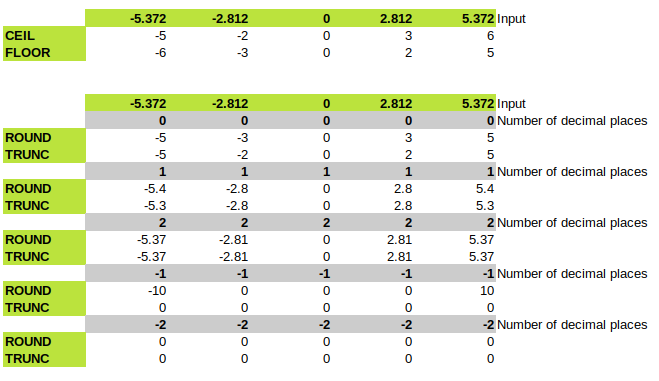

Table Of Contents
- Data Types
- Record Types
- Collections
- Using Collections for Bulk Operations
- Variable and Constant Declarations
- Block Structure
- Loops
- Exceptions
- Useful System Views
- Using RowIds
- Query Plans
- URI Types and Network Access from within the DB
- Rights Models
- Oracle SQL
- Returning Clauses
- Cursors (for Data Retrieval)
- Functions and Procedures
- Packages
Official Oracle Documentation
- Oracle 21c Development
- Oracle 21c PL/SQL Language Reference
- Oracle 21c SQL Language Reference
- Oracle 21c SQL Language Quick Reference
- All Oracle SQL Functions
Data Types
General Notes
- Summary of PL/SQL Data Built-in Data Types
PLS_INTEGERis highly efficient and should be used for all integer calculations.- For virtually every data type there is a corresponding TO_datatype function for performing conversions to it, in particular TO_NUMBER and TO_CHAR.
Mapping Between SQL, PL/SQL and C#
TODO!!!!!
Numeric Types
NUMBER (SQL Type)
NUMBER(precision, scale) can be used to represent ints, fixed-point (scale and precision) and floating point.
salary NUMBER(9,2); -- fixed point
multiplier NUMBER; -- decimal floating point, up to 40 digits
num_weeks NUMBER(3); -- integer, 3 digits, same as NUMBER(3,0)
The scale can actually be greater than the precision and can even be negative, but if you have a need for that you probably should go home and reconsider your life.
For creating equivalents of C#/SQL Server types, try these, though their ranges are in fact larger, e.g. NUMBER(3) allows for -999 to 999.
NUMBER(3) -- bytes
NUMBER(5) -- shorts (2 bytes in C#)
NUMBER(10) -- ints (4 bytes in C#)
NUMBER(20) -- longs (8 bytes in C#)
INTEGER
INTEGER is a subtype of NUMBER, defined as NUMBER(38). It is recommended for integer calculations that exceed the range of a PLS_INTEGER.
PLS_INTEGER, BINARY_INTEGER and SIMPLE_INTEGER (PL/SQL only)
PLS_INTEGER is hardware-implemented 32-bit signed integer type. It is used for for FOR loop indexes. BINARY_INTEGER is a synonym for PLS_INTEGER, but is deprecated - use PLS_INTEGER instead.
SIMPLE_INTEGER is a subtype of PLS_INTEGER that does not allow NULLs.
There are several other subtypes of PLS_INTEGER, with the ranges you would expect, e.g. POSITIVE.
BINARY_FLOAT and BINARY_DOUBLE (SQL Type)
These types are 32 and 64 bit floating point numbers which map to the IEEE754 standard (i.e. they are hardware supported).
Working With Numbers
CEIL, FLOOR, ROUND, TRUNC work as you would expect: 
There is also (as well as the usual assortment or trig functions):
- SIGN(n)
- SQRT(n)
- POWER(n, pwr)
nandpwrdo not need to be integers - MOD(n,m) remainder of
ndivided bym. - LOG(base, n) and LN(n)
- LEAST(n1, n2, n3…) and GREATEST(n1, n2, n3…) these also work on strings
Character Types
char
and
varchar2 (up to 32,767 bytes). Also their nchar and nvarchar2 variants.
Working With Strings
- String indexes are 1-based!
- LENGTH(str) returns the length in characters: for ASCII this will be the same as
LENGTHB(length in bytes). - Perform case conversion with UPPER(str) and LOWER(str).
- There’s INITCAP(str) and it sometimes works correctly…
- INSTR(haystack, needle [,pos] [,occur]) returns the index of the needle in the haystack, or 0 if not found.
needlecan be a string, not just a char.posspecifies the start position, andoccurspecifies which occurence to return. Ifposis negative, start at the end and search backwards (note that this behaviour differs slightly fromSUBSTR, which goes forwards from its negative starting position). - SUBSTR(str, pos [,len]) Returns a substring of length
lenfromstr. Strangely,poscan be 0, in which case it is treated as 1! Iflenis omitted, go to the end of thestr. Ifposis negative, count backwards from the end to find the start position and then go forward from there. - There is no LEFT and RIGHT function, but
LEFT(str, len) = SUBSTR(str, 1, len)andRIGHT(str, len) = SUBSTR(str, -len) - LPAD(str, len [, pad_str]) and RPAD(str, len [, pad_str]) do what you expect. If the
stris longer thanlenthen it is trimmed down tolen.pad_strcan be a single character or a string, and if omitted defaults to space. - LTRIM(str [,chars_to_trim]) and RTRIM(str [,chars_to_trim]) work as expected. If
chars_to_trimis absent, spaces are trimmed. - There is a TRIM function, but it is NOT equivalent to
LTRIM(RTRIM(str))in most cases, though where the character to be trimmed is spaces, the shown call is correct. - TRANSLATE(str, charset, replacement_charset) is the Oracle equivalent of Unix
tr.
-- nvarchar via the 'n' prefix
vGerman := n'Straße';
UPPER('hello world'); -- 'HELLO WORLD'
INITCAP('hello world'); -- 'Hello World'
INSTR('hello world', 'o'); -- 5
INSTR('hello world', 'o', 6); -- 8
INSTR('hello world', 'o', 1, 2); -- 8
INSTR('hello world', 'o', -1); -- 8 (searching backwards from the end)
INSTR('hello world', 'o', -1, 2); -- 5 (searching backwards from the end)
SUBSTR('hello world', 0); -- 'hello world'
SUBSTR('hello world', 1); -- 'hello world'
SUBSTR('hello world', 1, 3); -- 'hel', i.e. LEFT(str, 3)
SUBSTR('hello world', 2); -- 'ello world'
SUBSTR('hello world', 2, 3); -- 'ell'
SUBSTR('hello world', -3); -- 'rld', i.e. RIGHT(str, 3)
SUBSTR('hello world', -5, 3); -- 'wor' (5 back from the end, then 3)
LPAD('hello', 8); -- ' hello'
LPAD('hello', 3); -- 'hel'
LPAD('hello', 8, '.'); -- '...hello'
LPAD('hello', 8, '-='); -- '-=-hello'
RPAD('hello', 3); -- 'hel'
LTRIM(' hello '); -- 'hello '
RTRIM(LTRIM(' hello ')); -- 'hello'
TRIM(' hello '); -- 'hello'
TRIM(BOTH '=' FROM '===hello==='); -- 'hello'
LTRIM(' 123hello99', ' 1234567890'); -- 'hello99'
TRANSLATE('hello world', 'ld', 'LD'); -- 'heLLo worLD'
TRANSLATE('12hello 34world', 'x12345', 'x'); -- 'hello world' (trick to remove chars, in this case digits, by translating them to empty spaces)
Regular Expressions
- REGEXP_LIKE - boolean test to see if a pattern matches.
- REGEXP_COUNT - count how many times a pattern matches
- REGEXP_INSTR - return the char index of pattern match
- REGEXP_SUBSTR - return the text matching the pattern
- REGEXP_REPLACE - replace matched text with new text (only one piece of new text can be specified)
Data and Time Types
DATE stores dates and times down to the second.
TIMESTAMP(n) goes down to n fractions of a second. n defaults to 6.
TIMESTAMP WITH TIME ZONE includes a specific timezone in its value. The offset is the difference between the timezone and UTC.
TIMESTAMP WITH LOCAL TIME ZONE stores data normalized to the database system’s timezone.
INTERVAL YEAR TO MONTH(year_precision) stores a period of time down to month precision, e.g. “3 years and 2 months”. It is useful for specifying differences between datetime values.
INTERVAL DAY (day_precision) TO SECOND (fractional_seconds_precision) stores a period of time in terms of days, hours, minutes and (fractional) seconds. It is useful for precise datetime differences.
Data and Time Conversions and Formatting
It’s always best to use the TO_DATE, TO_TIMESTAMP, TO_TIMESTAMP_TZ, TO_UTC_TIMESTAMP_TZ functions to do conversions from strings.
Formatting for all these date-time types is handled by TO_CHAR.
The Format Models page describes the components within these format strings.
SELECT TO_DATE('2022-03-07', 'YYYY-MM-DD') FROM DUAL;
SELECT TO_DATE('07-SEP-2022', 'DD-MON-YYYY') FROM DUAL;
SELECT TO_TIMESTAMP ('10-Sep-02 14:10:10.123000', 'DD-Mon-RR HH24:MI:SS.FF') FROM DUAL;
To roundtrip dates and timestamps USE xxxx.
Date and Timestamp Literals
You can declare DATE and TIMESTAMPs using literal syntax. The formats are fixed by the ISO standard (i.e. they don’t care about NLS settings) so these are safe to use:
v1 := DATE 'YYYY-MM-DD'
v2 := TIMESTAMP 'YYYY-MM-DD HH:MI:SS[.FFFFFFFFFF] [{+|-}HH:MI]
Current Date and Time
SYSDATE and SYSTIMESTAMP return the current date and timestamp ON THE SERVER. CURRENT_DATE, CURRENT_TIMESTAMP and LOCAL_TIMESTAMP return the current date and timestamp FOR YOUR SESSION.
To see your settings, query DBTIMEZONE and SESSION_TIMEZONE.
Interval Types
Some definitions:
- An Instant is a point in time. Represented by the DATE and TIMESTAMP types.
- An Interval is an amount of time, such as “8 days”. There are two types to represent these, INTERVAL YEAR TO MONTH and INTERVAL DAY TO SECOND.
- A Period is an interval that begins at a specific time - hence combining the above two definitions. There is no built-in Oracle support for these types.
An interval is declared as one of these two types:
var1 INTERVAL YEAR [(year_precision)] TO MONTH;
var2 INTERVAL DAY [(day_precision)] TO SECOND [(frac_sec_precision)];
See the links above for the precision limits.
You can convert numbers to the interval types using NUMTOYMINTERVAL and NUMTODSINTERVAL. To convert strings to intervals use TO_YMINTERVAL and TO_DSINTERVAL. You can also write interval literals using the same character formats, for example
v1 := INTERVAL '10-3' YEAR TO MONTH;
v2 := INTERVAL '4' YEAR;
v3 := INTERVAL '3 12:13:14.45' DAY TO SECOND;
V4 := INTERVAL '1:03' HOUR TO MINUTE;
Extracting Date Components
Use EXTRACT. You can extract YEAR, MONTH, DAY, HOUR, MINUTE, SECOND and timezone bits.
IF EXTRACT(MONTH FROM SYSDATE) = 1 THEN...
Datetime Arithmetic
For DATE values we can perform arithmetic thusly:
SYSDATE + 1 -- Add 1 day
SYSDATE + (4/24) -- Add 4 hours
SYSDATE + (12/1440) -- Add 12 minutes
SYSDATE + (12/24/60) -- Also add 12 minutes
SYSDATE + (37/86400) -- Add 37 seconds
SYSDATE + (37/24/60/60) -- Also add 37 seconds
You can add an interval to a timestamp. Example using the interval literal format:
-- Add 3 days, 4 hours and 30 minutes to the current time.
SYSTIMESTAMP + INTERVAL '3 4:30' DAY TO SECOND;
This works OK for DAY TO SECOND but for YEAR TO MONTH it is problematic because of varying month lengths. You can use ADD_MONTHS to add or subtract whole months even when you are dealing with a day at the end of the month (it clamps the result to the end of month)
end_of_may2008 := TO_TIMESTAMP('31-MAY-2008', 'DD-Mon-YYYY');
next_month := TO_TIMESTAMP(ADD_MONTHS(end_of_may2008, 1)); -- 30 June 2008.
If you subtract two TIMESTAMPS you get an INTERVAL DAY TO SECOND (always). The interval can be negative. On the other hand, if you subtract two DATES you get a fractional number
indicating the number of 24 hour periods they are apart.
If you mix DATE and TIMESTAMP expression Oracle will implicitly promote everything to TIMESTAMP. It is best to do this casting explicitly yourself.
You can add and subtract two intervals, and you can multiply an interval by a number.
DECLARE
vInterval INTERVAL YEAR TO MONTH := '2-10';
BEGIN
vInterval := vInterval * 3;
END;
Misc Date Tricks
-- Truncate to minute resolution.
SELECT TRUNC(SYSDATE, 'MI') FROM DUAL;
-- Generate dates by the minute.
SELECT
TRUNC(SYSDATE - 3) -- Start date, i.e. 3 days ago at 00:00
+ (level - 1)/1440 AS result,
level
FROM DUAL
CONNECT BY LEVEL <= (SYSDATE - TRUNC(SYSDATE - 3)) * 1440
ORDER BY result;
-- Timing code.
DECLARE
vStartTime PLS_INTEGER;
BEGIN
vStartTime := DBMS_UTILITY.GET_TIME();
-- Code here
DBMS_OUTPUT.PUT_LINE('Took ' || (DBMS_UTILITY.GET_TIME() - vStartTime));
END;
Other Types
PL/SQL has a Boolean Type which supports NULLs, but it can’t be used in tables, only in PL/SQL code. For tables, use NUMBER(1) or CHAR(1).
ROWID represents the address of a row. You can get it by selecting the pseudo-column ROWID. An update that uses ROWID in its where clause is guaranteed to update 1 row.
BLOB and CLOB are for very long (up to 4GB) binary data and text, respectively. They should be used in preference to the deprecated RAW and LONG RAW.
SubTypes
Subtypes can be created constrained or unconstrained. An unconstrained subtype is a way of making a type alias.
-- Constrained
SUBTYPE SMALL IS BINARY_INTEGER RANGE 1..3;
-- Unconstrained
SUBTYPE FLOATY IS BINARY_FLOAT;
Record Types
Record types correspond to a row of a table or simply a tuple of data. They can be declared and used as follows
- Using %ROWTYPE
- Using Type x IS RECORD ( … )
- Using a cursor
%ROWTYPE
DECLARE
-- Table based, assuming a Books table
vBook Books%ROWTYPE;
-- Custom record type.
TYPE customRecord IS RECORD (
Id PLS_INTEGER,
Name SomeTable.Column.%TYPE
);
vCustom customRecord;
-- Cursor based record type.
DECLARE curBooks IS SELECT * FROM Books...;
vMyBook curBooks%ROWTYPE;
-- Ref cursor.
TYPE booksRefCur IS REF CURSOR RETURN Books%ROWTYPE;
vBooksCur booksRefCur;
vOneBook vBooksCur%ROWTYPE;
-- Nested record type with default values.
TYPE CountyRecord IS RECORD ( ... );
TYPE CountiesTable IS TABLE OF CountyRecord INDEX BY BINARY_INTEGER;
TYPE CountryRecord IS RECORD (
ISOCode VARCHAR2(255) NOT NULL := 'UK',
CapitalCounty CountyRecord, -- Nest 1 record
OtherCounties CountiesTable -- Nest an entire table
);
BEGIN
-- Fetch one row
SELECT * INTO vBook ...
IF vBook.Author = 'Philip Daniels' THEN ...
-- Implicit record type from a for loop
FOR vBookRec IN (SELECT * FROM Books) LOOP
-- Records have value semantics and can be copied, passed and
-- returned from procs and functions.
vBackupBook := vBookRec;
-- Can insert entire rows. Note lack of parentheses.
INSERT INTO BackupBooks VALUES vBackupBook;
-- Updates of entire rows use the 'ROW' keyword.
UPDATE SecondBackups SET
ROW = vBackupBook
WHERE
Id = vBackupBook.Id;
-- Records can also be used in RETURNING clauses, but you must
-- individually name each field. This also works for BULK COLLECT INTO.
UPDATE SecondBackups SET
ROW = vBackupBook
WHERE
Id = vBackupBook.Id
RETURNING col1, col2, col3...
INTO vAdjustedBook;
END LOOP
-- Records have constructors which you call like a function.
vMyCounty := CountryRecord('Y'J, 500000, 'York');
-- You can't do this, it doesn't work.
IF vMyRecordType IS NULL THEN...
-- Instead, check a non-nullable field inside the record.
IF vMyRecordType.Id IS NULL THEN...
END
- You can set all the fields of a record to NULL by assigning NULL to the record variable.
- You cannot compare entire records for equality, you must do it field by field.
- You can assign records of different types if the underlying fields are data-type compatible.
- Records cannot have member functions, they only apply to object types. Object types must be defined at the SQL-level.
For information of passing records and collections of records to and from C#, see this blog post about my Helpers for Calling Oracle.
Collections
Collections are containers which are indexed by an integer or a string. Each entry in the container is either a primitive type or an aggregate such as a record type. There are three types of collections
| Type | Index By | Fixed Size? | Sparse? | PLSQL/DB? |
|---|---|---|---|---|
| Associative arrays | INT, STR | No | Sparse | PLSQL |
| VARRAYs | NT | Yes | Dense | PLSQL, DB |
| Nested tables | INT | No | Sparse | PLSQL, DB |
For information about passing records and collections of records to and from C#, see this blog post about my Helpers for Calling Oracle.
Associative Arrays
Associative arrays are also known as ‘index-by tables’ because they can be indexed by strings or integers. They are like hashmaps in other programming languages.
Associative arrays cannot be manipulated with SQL DML statements.
They are useful for passing arrays of records to and from the database server, see BULK OPERATIONS for examples.
DECLARE
-- You can use 'INDEX BY tbl.col%TYPE'
TYPE PersonTable IS TABLE OF Person%ROWTYPE INDEX BY PLS_INTEGER;
vPeople PersonTable;
vIdx PLS_INTEGER;
BEGIN
vPeople(1212).FirstName := 'Philip';
vPeople(-3).FirstName := 'Zaphod';
vIdx = vPeople.FIRST;
WHILE (vIdx IS NOT NULL) LOOP
...
vIdx = vPeople.NEXT(vIdx);
END LOOP;
END;
VARRAYs
VARRAYs are arrays whose number of elements can vary from zero (empty) to the declared maximum size.
VARRAYs are rather inflexible because you must set or get all elements at the same time. However, they do preserve the order of their elements.
DECLARE
TYPE Foursome IS VARRAY(4) OF VARCHAR2(15);
team Foursome := Foursome(); -- initialize to empty by calling ctor
team := Foursome('John', 'Mary', 'Alberto', 'Juanita'); -- Initialize each element
Nested Tables
Nested Tables is a database column type that stores a variable number of rows in no particular order (i.e. it behaves like a normal table would). The syntax for declaring them is similar to that for associative arrays, but it lacks the INDEX BY clause. Constructors are similar to those for VARRAYs, but
DECLARE
TYPE Roster IS TABLE OF VARCHAR2(15);
vEmptyRoster := Roster();
vQuadRoster := Roster('Ringo', 'John', 'Paul', 'George');
Nested tables can be defined as sub-tables in SQL by using the CREATE TABLE () NESTED TABLE x STORE AS y syntax. You can only access the nested table via the outer table, even though it is stored as a separate physical table in the database. To insert values,
use the constructor syntax.
CREATE TYPE CourseList AS TABLE OF VARCHAR2(64);
CREATE TABLE department (
name VARCHAR2(20),
director VARCHAR2(20),
office VARCHAR2(20),
courses CourseList)
NESTED TABLE courses STORE AS courses_tab;
Collection Methods
- COUNT - return the number of elements
- FIRST and LAST - return the first (smallest) and last (largest) subscripts
- EXISTS - boolean check for element existence
- PRIOR and NEXT - get the prior or next subscript, for iteration
- DELETE - remove 1 or more elements
- TRIM - remove elements from the end
- EXTEND - increases the number of elements in a VARRAY or nested table
- LIMIT - returns the length of a VARRAY
IF my_collection.COUNT > 0 THEN
...
END IF;
FOR idx IN my_collection.FIRST .. my_collection.LAST LOOP
...
END LOOP;
IF EXISTS my_collection(12) THEN
...
END IF;
-- Iterate forwards over non-contiguous keys. Use LAST/PRIOR to go backwards.
idx := my_collection.FIRST;
LOOP
EXIT WHEN idx IS NULL; -- Termination condition
-- use my_collection(idx)
idx := my_collection.NEXT;
END LOOP;
my_collection.DELETE(idx);
my_collection.DELETE(i, j); -- delete i-th to j-th elements inclusive
my_collection.DELETE; -- delete all elements
my_collection.TRIM ; -- remove one element from the end
my_collection.TRIM(6) -- remove 6 elements from the end
-- For nested tables and varrays you must reserve a slot with
-- EXTEND before setting the new element. For associative arrays
-- this is not needed (because they are like hashmaps).
my_collection.EXTEND; -- Add 1 NULL element
my_collection(my_collection.LAST) := new_data;
my_collection.EXTEND(5); -- Add 5 new NULL elements
my_collection.EXTEND(5, 'hello'); -- Add 5 new elements with value 'hello'
-- LIMIT is used with VARRAYs only, to find the max number of elements allowed
IF my_array.LAST < my_array.LIMIT THEN
my_array.EXTEND;
END IF;
Using Collections for Bulk Operations
You can populate a collection with 1 element using a SELECT:
SELECT col
INTO my_colors
FROM...
WHERE PK = ...
If you want to get more than 1 row, you need a BULK COLLECT:
SELECT *
BULK COLLECT INTO vPeople [LIMIT n]
FROM Person
WHERE ...;
An optional LIMIT or FETCH FIRST clause allows you to limit the number of rows, this is useful for loops which process N
rows at a time, for example:
OPEN vMyCur;
LOOP
FETCH vMyCur
BULK COLLECT INTO vEmployees
LIMIT 100;
EXIT WHEN vEmployees.Count = 0;
...
END LOOP;
CLOSE vMyCur;
The above examples also shows how BULK COLLECT
can be used with an explicit cursor.
You can also collect multiple things simultaneously:
SELECT FirstName, LastName
BULK COLLECT INTO vFirstNames, vLastNames
FROM People
You can use BULK COLLECT with a
RETURNING
clause to gather the changes that were made to multiple rows.
UPDATE ...
RETURN ChangedColumn
BULK COLLECT INTO vChanges;
A collection variable can be passed to the TABLE function to produce
a virtual table which can be queried in a SELECT statement. For tables of
primitive types you can use the COLUMN_VALUE keyword to give a name
to the column.
CREATE OR REPLACE TYPE NameTable IS
TABLE OF VARCHAR2(200);
DECLARE
vNames NameTable := NameTable();
SELECT COLUMN_VALUE my_name
FROM TABLE(vNames)
ORDER BY my_name;
If you are using a record or object type then you don’t need COLUMN_VALUE:
CREATE OR REPLACE TYPE xxx AS OBJECT(x INT, y VARCHAR(20));
CREATE OR REPLACE TYPE xxxTable AS TABLE OF xxx;
DECLARE
vX xxxTable := xxxTable();
a INT;
BEGIN
vX.EXTEND(2);
vX(1) := xxx(20, 'ggg');
vX(2) := xxx(220, 'dddddd');
SELECT x
INTO a
FROM
TABLE(vX)
WHERE y = 'ggg';
DBMS_OUTPUT.PUT_LINE('a = ' || a); -- Prints 20
END;
Note this TABLE example used schema-level types for simplicity. You can also
use TABLE with all 3 collection types if they are declared in a package specification, but you CAN’T use TABLE with a locally declared collection type (such as in a DECLARE block at the beginning of a procedure).
Variable and Constant Declarations
Variable declarations:
name datatype [NOT NULL] [ := | DEFAULT default_assignment ];
vName VARCHAR2(255);
vName2 VARCHAR2(255) NOT NULL := 'Zaphod';
vName3 VARCHAR2(255) NOT NULL DEFAULT 'Arthur'; -- Weird
vDate DATE := SYSDATE;
Constant declarations:
name CONSTANT datatype [NOT NULL] := DEFAULT default_value;
cNow CONSTANT TIMESTAMP NOT NULL := SYSDATE;
cCurrentYear CONSTANT PLS_INTEGER := TO_NUMBER(TO_CHAR(SYSDATE, 'YYYY'));
Type anchoring can be performed against table columns (using %TYPE) or entire tables or cursors (using %ROWTYPE):
vName PersonTable.NameColumn%TYPE;
vPerson PersonTable%ROWTYPE;
Block Structure
The basic block structure is as follows. HEADER is PROCEDURE etc. and allows the block to be named, and hence called from other places. Without a header, you have an anonymous block.
HEADER (PROC, FUNCTION, PACKAGE or PACKAGE BODY)
IS
declaration section
BEGIN
execution section
EXCEPTION
exception section
END;
Anonymous blocks are for immediate execution. An anonymous block has a slightly different syntax:
DECLARE
declaration section
BEGIN
execution section
EXCEPTION
exception section
END;
Blocks can be nested. Typically, one defines a nested procedure or function in the declaration section. It can refer to variables and types defined in the enclosing block (like a closure).
Loops
All loops support CONTIUNE and CONTINUE WHEN expr.
Simple loop, aka. loop with exit:
LOOP
EXIT WHEN some_condition;
-- or RETURN
-- or IF some_condition THEN EXIT; END IF;
END LOOP;
Infinite loop with sleeping:
LOOP
-- do work
DBMS_LOCK.SLEEP(10); -- seconds
END LOOP;
Numeric FOR loop. Inclusive of lower and upper bounds. BY is Oracle 21c.
FOR vIndex IN [REVERSE] lower_bound .. upper_bound [BY n] LOOP
...
END LOOP;
Cursor FOR loop using an inline SELECT statement:
FOR rec IN (SELECT * FROM ...) LOOP
...
END LOOP;
Cursor FOR loop using a declared cursor:
FOR rec IN curMyCursor LOOP
...
END LOOP;
This is much more concise than the equivalent explicit formulation:
DECLARE
CURSOR curFoo IS SELECT ...
vFoo curFoo%ROWTYPE;
BEGIN
OPEN curFoo;
LOOP
FETCH curFoo INTO vFoo;
EXIT WHEN curFoo%NOTFOUND;
END LOOP;
CLOSE curFoo;
END;
WHILE condition LOOP
...
END LOOP;
Collection iteration loop. From Oracle 21c:
FOR i IN VALUES OF vec LOOP ...
FOR i IN INDICES OF vec LOOP ...
FOR i,j IN PAIRS OF result LOOP ...
Exceptions
There are a large number of pre-defined
named exceptions
which cover common error conditions including NO_DATA_FOUND, TOO_MANY_ROWS, ZERO_DIVIDE, INVALID_NUMBER, VALUE_ERROR, DUP_VAL_ON_INDEX, INVALID_CURSOR, CURSOR_ALREADY_OPEN. You can also create your own named exceptions and
RAISE them
just like the standard built-in exceptions. However, this exception is limited to the scope of the block. Also here we demonstrate the flexibility of the WHEN clause:
DECLARE
exImproperWrangling EXCEPTION;
BEGIN
...
RAISE exImproperWrangling;
...
EXCEPTION
WHEN NO_DATA_FOUND THEN ...
WHEN exImproperWrangling THEN ...
WHEN exFirst OR exSecond OR exThird THEN ...
WHEN OTHERS THEN ...
END;
Raising Custom Exceptions
Create a package to hold your application-wide exceptions and associate the name with a number using the EXCEPTION_INIT pragma. The number must be between -20,000 and -20,999.
CREATE OR REPLACE PACKAGE MyExceptions
IS
INVALID_WRANGLING CONSTANT NUMBER := -20000;
excINVALID_WRANGLING EXCEPTION;
PRAGMA EXCEPTION_INIT (INVALID_WRANGLING, -20000);
...
We can then raise them and refer to them as follows:
...
RAISE_APPLICATION_ERROR(MyExceptions.INVALID_WRANGLING, 'Custom msg here');
...
EXCEPTION
WHEN excINVALID_WRANGLING THEN ...
END;
Error Built-ins
- SQLCODE returns the number of the last error, or 0 if there was no error.
- SQLERRM(n) returns the error message for
n, or ifnis not specified then the current error as specified bySQLCODE. If there is no error, ‘ORA-0000: normal, successful completion’ is returned. - DBMS_UTILITY.FORMAT_ERROR_STACK, DBMS_UTILITY.FORMAT_ERROR_BACKTRACE, and DBMS_UTILITY.FORMAT_CALL_STACK can all be used to get useful information about the exception environment.
Useful System Views
Using RowIds
Query Plans
URI Types and Network Access from within the DB
See page 452.
Rights Models
definer rights model - access to objects is determined at the time of compilation
invoker rights model - uses AUTHID CURRENT USER to determine access to objects at runtime
See Chapter 24.
Oracle SQL
Sequences
To define a sequence, use the CREATE SEQUENCE statement:
CREATE SEQUENCE schema_name.sequence_name
[INCREMENT BY interval]
[START WITH first_number]
[MAXVALUE max_value | NOMAXVALUE]
[MINVALUE min_value | NOMINVALUE]
[CYCLE | NOCYCLE]
[CACHE cache_size | NOCACHE]
[ORDER | NOORDER];
To get the next value from a sequence, you can simply call the NEXTVAL function from a SQL statement such as an INSERT or a PL/SQL statement:
INSERT INTO MyTable(Id, Name)
VALUES (MySequence.NEXTVAL, 'Phil');
vNextVal := MySequence.NEXTVAL;
Sequences can also be used in DEFAULT expressions for table columns:
CREATE TABLE MyTable
(
Id NUMBER(16) DEFAULT MySchema.MySequence.NEXTVAL PRIMARY KEY,
Name NVARCHAR2(50)
)
Cursor Attributes
When executing a SQL statement in PL/SQL, there are some Implicit Cursor Attributes that you can use in your logic:
| Name | Description |
|---|---|
| SQL%FOUND | Returns TRUE if one or more rows were modified |
| SQL%NOTFOUND | Returns TRUE if no rows were modified |
| SQL%ROWCOUNT | Returns the number of modified rows |
DML Optimisation with FORALL
The FORALL statement batches DML statements and sends them all to the execution engine together. This reduces the number of round trips and can massively increase performance. The body of the FORALL must be a single DML statement that refers to collections via an index.
DECLARE
TYPE IdTable IS TABLE OF People.PeopleId%TYPE INDEX BY PLS_INTEGER;
TYPE OccupationsTable IS TABLE OF VARCHAR(50) INDEX BY PLS_INTEGER;
BEGIN
FORALL idx IN vPeople.FIRST .. vPeople.LAST
UPDATE People SET
Occupation = vOccupations(idx)
WHERE
PeopleId = vIds(idx)
RETURNING Occupation
BULK COLLECT INTO vOccs;
END;
Note that the above shows how we can also use a RETURNING clause: because FORALL is a bulk operation we must
use BULK COLLECT rather than just COLLECT.
Cursor attributes set by FORALL
FORALL helpfully sets various cursor attributes so that you can check the
results of the DML operation.
| Name | Description |
|---|---|
| SQL%FOUND | Returns TRUE if one or more rows were modified |
| SQL%NOTFOUND | Returns TRUE if no rows were modified |
| SQL%ROWCOUNT | Returns the number of modified rows |
| SQL%BULK_ROWCOUNT | A collection that tells you how many rows were changed by each DML statement |
| SQL%BULK_EXCEPTIONS | A collection that tells you of any exceptions raised |
Typically, when you are updating a row identified by a PK, SQL%BULK_ROWCOUNT(idx) will be 0 or 1.
Dealing with Exceptions in FORALL statements
By default, if any DML statement in a FORALL generates an exception then the whole statement (every DML statement) will be rolled back. However, if you use the SAVE EXCEPTIONS clause, the Oracle engine will give you a chance to
deal with the errors.
BEGIN
FORALL idx IN 1..20
SAVE EXCEPTIONS
UPDATE ...
EXCEPTION
WHEN OTHERS THEN
IF SQLCODE = -24831 THEN
FOR indx IN 1 .. SQL%BULK_EXCEPTIONS.COUNT LOOP
-- Find the index of the element that caused an exception
i := SQL%BULK_EXCEPTIONS(indx).ERROR_INDEX;
-- ERROR_CODE returns the SQL error code. Multiple by -1
-- before using with SQLERRM.
-- Take corrective action here...
END LOOP;
ELSE
RAISE;
END IF;
Returning Clauses
A RETURNING allows you to get information about the rows affected by an UPDATE, DELETE OR INSERT statement (rarely used with INSERT, but can be used to get a default value). The syntax for single rows and multiple rows differs slightly:
DECLARE
vSalary Employees.Salary%TYPE;
BEGIN
UPDATE Employees SET
Salary = Salary * 1.1
WHERE employee_id = 100
RETURNING salary INTO vSalary;
END;
DECLARE
names name_varray;
new_salaries number_varray;
BEGIN
populate_arrays(names, new_salaries);
FORALL indx IN names.FIRST..names.LAST
UPDATE compensation SET
salary = new_salaries(indx)
WHERE
last_name = names(indx)
RETURNING salary BULK COLLECT INTO new_salaries;
END;
Transactions
There is no BEGIN TRAN. Oracle starts a transaction implicitly with the first SQL statement issued after the last COMMIT or ROLLBACK. If a ROLLBACK TO SAVEPOINT` is issued then the transaction continues.
After COMMIT your changes will be visible to other database users. ROLLBACK can rollback the entire transaction or to a SAVEPOINT.
Savepoints allow you to establish ‘partially done’ semantics within a transaction. Savepoint names must be unique within a transaction; if a name is reused then the savepoint is moved to the new location.
SAVEPOINT my_savepoint;
...
ROLLBACK;
ROLLBACK WORK;
ROLLBACK TO my_savepoint;
You can use savepoints within loops to ‘commit the good’ and ‘reject the bad’. The general pattern is:
FOR ... LOOP
BEGIN
SAVEPOINT MySavepoint;
-- Do work here
EXCEPTION
WHEN OTHERS THEN
ROLLBACK TO MySavepoint;
END;
END LOOP;
Autonomous transactions are transactions that are executed as their own unit, separate from any calling transaction. They are useful mainly for logging.
PROCEDURE Log(...)
IS
PRAGMA AUTONOMOUS_TRANSACTION;
BEGIN
-- Code...
-- An explicity commit or rollback is required. The calling
-- transaction then resumes.
COMMIT;
END;
Cursors (for Data Retrieval)
Definitions
| Name | Description |
|---|---|
| Implicit cursors | A simple SELECT .. INTO creates and uses a cursor. Used for one row |
| Explicit cursors | A cursor declared in a local block or package. Used for 1 or more rows |
| Cursor variables | A REF CURSOR, which is a pointer to a cursor’s resultset |
| Cursor expressions | The CURSOR expression transforms a SELECT into a REF CURSOR |
| SELECT FOR UPDATE | A special type of SELECT which issues row locks on each row retrieved |
Cursor Attributes
There are 6 Cursor Attributes:
| Name | Description |
|---|---|
| %FOUND | Returns true if a row was fetched |
| %NOTFOUND | Returns true if a row was NOT fetched |
| %ROWCOUNT | Returns the number of rows fetched so far |
| %ISOPEN | Returns true if the cursor is open |
| %BULK_ROWCOUNT | Returns the number of rows modified by a FORALL |
| %BULK_EXCEPTIONS | Returns exceptions for rows modified by a FORALL |
These are used in the following way for explicit cursors. For implicit cursors, the cursor name is always "SQL".
vCursorName%ATTRIBUTE
Cursor Declarations
A basic declaration:
DECLARE
CURSOR myCursor IS SELECT ...;
A cursor that names its return type - not neccessary but aids documentation. The RETURN clause can also refer to other cursors or record types:
DECLARE
CURSOR myCursor RETURN myTable%ROWTYPE
IS SELECT ...;
Cursors can have parameters, including defaults:
DECLARE
CURSOR myBiggerCursor(
p1 NUMBER(10),
p2 VARCHAR2(50),
p3 NUMBER DEFAULT 10000
) IS SELECT ...;
Cursors can also be declared in packages and their specs and bodies can be separated, which can reduce recompilations.
PACKAGE x IS
CURSOR myCursor RETURN MyRecType;
END;
PACKAGE BODY x IS
CURSOR myCursor RETURN MyRecType
IS SELECT...
END;
Cursor Usage
As noted in Loops above, once a cursor is declared you can loop over the records using a Cursor FOR loop or explicitly:
FOR rec IN curMyCursor LOOP
...
END LOOP;
This is much more concise than the equivalent explicit formulation:
DECLARE
CURSOR curFoo IS SELECT ...
vFoo curFoo%ROWTYPE;
BEGIN
OPEN curFoo;
LOOP
FETCH curFoo INTO vFoo;
EXIT WHEN curFoo%NOTFOUND;
END LOOP;
CLOSE curFoo;
END;
Cursors - Locking Rows with FOR UPDATE
Normally a cursor does not lock rows that it reads. Others will be able to update those rows (though you will not see their changes).
The FOR UPDATE clause allows you to lock a set of records before you update them. Row-level locks are applied as soon as the cursor is opened, preventing others from updating those rows. Other sessions can still read those rows, but will not be able to see your changes until you COMMIT (note that the first COMMIT will release ALL locks from the cursor, so you won’t be able to fetch more rows after the COMMIT).
DECLARE
CURSOR myCursor IS SELECT ...
IS SELECT ...
FOR UPDATE;
-- or..
CURSOR myCursor IS SELECT ...
FOR UPDATE OF col1, col2;
-- or..for cursors that refer to multiple tables we can
-- make it so we only lock rows in one of the tables.
CURSOR myCursor IS SELECT ... FROM tbl1, tbl2
FOR UPDATE OF tbl2.col2;
What if the rows are locked by another session? By default, FOR UPDATE will wait until the rows are available or a timeout occurs
DECLARE
CURSOR myCursor IS SELECT ...
IS SELECT ...
FOR UPDATE; -- Wait forever (really until timeout)
CURSOR myCursor IS SELECT ...
IS SELECT ...
FOR UPDATE WAIT 10; -- Wait 10 seconds
CURSOR myCursor IS SELECT ...
IS SELECT ...
FOR UPDATE NOWAIT; -- Don't wait
CURSOR myCursor IS SELECT ...
IS SELECT ...
FOR UPDATE SKIP LOCKED; -- Skip locked rows
The exception that occurs on timeout is a named system exception called TIMEOUT_ON_RESOURCE.
Cursors - Avoiding using ROWIDs and Primary Key clauses
You can use WHERE CURRENT OF to update or delete the last fetched row in a table. This means you don’t need to write complicated Primary Key equality WHERE clauses or retrieve ROWIDs.
UPDATE table_name
SET set_clause
WHERE CURRENT OF myCursor;
DELETE
FROM table_name
WHERE CURRENT OF myCursor;
Cursors - Cursor Variables and Reference Cursors
The explicit and implicit cursors defined above are both types of static cursor - they define fixed names which can be referred to in code. The schema of records returned by the cursor is fixed at compile time.
Oracle also has cursor variables, which point to the underlying cursor. Cursor variables can be passed to functions, copied, associated with different queries at different times, and assigned to each other (so that you end up with two pointers to the same underlying cursor execution area).
Declare a cursor variable like this - the syntax gives rise to the alternative name ‘REF CURSOR’:
DECLARE
TYPE myCurType IS REF CURSOR [RETURN return_type];
vMyCur myCurType;
vMyWeakCursor SYS_REFCURSOR;
If the RETURN clause is specified, then the cursor type is strong, else it is weak. Strong cursor variables must always be used with SELECTs that return appropriate column schemas, on the other hand weak cursor variables are polymorphic - they can be used (carefully) with any SELECT statement.
The built-in type SYS_REFCURSOR can be used to declare weak cursor variables, therefore there is little need to declare your own weak cursor types.
Unfortunately, you can’t use a FOR LOOP with SYS_REFCURSOR. You must FETCH.
DECLARE
vCur1 SYS_REFCURSOR;
vRec MyTable%ROWTYPE;
BEGIN
OPEN vCur1 FOR SELECT * FROM MyTable;
LOOP
FETCH vCur1 INTO vRec;
EXIT WHEN vCur1%NOTFOUND;
DBMS_OUTPUT.PUT_LINE(vRec.CreatedDate);
END LOOP;
CLOSE vCur1;
END;
Returning data to client programs is typically done using a SYS_REFCURSOR:
FUNCTION foo RETURN SYS_REFCURSOR
IS
vReturn SYS_REFCURSOR;
BEGIN
OPEN vReturn FOR
SELECT * FROM ...;
RETURN vReturn;
END foo;
Cursor Expressions
Cursor expressions can be used to create ‘nested SELECTs’, such as retrieving a subquery as a column in an outer query. They are niche, see the linked documentation for an example.
However, one important use is for creating Streaming Functions. They can also be used to pass resultsets into functions
CREATE VIEW young_managers
AS
SELECT managers.employee_id AS manager_employee_id
FROM employees managers
WHERE
-- This is the function. It takes two params:
-- a cursor and a date.
most_reports_before_manager
(
CURSOR
(
SELECT reports.hire_date
FROM employees reports
WHERE reports.manager_id = managers.employee_id
),
managers.hire_date
) = 1;
Functions and Procedures
Table functions
Table functions return a resultset and can be referenced in a FROM clause. Such functions must return a
nested table
or
VARRAY - in practive a nested table tends to be favoured because VARRAYs require a maximum size to be specified.
Given a definition
DECLARE
TYPE MyObject AS OBJECT (...);
TYPE MyObjectTable AS TABLE OF MyObject;
FUNCTION DoStuff(i PLS_INTEGER)
RETURN MyObjectTable
IS
BEGIN
...
END DoStuff;
We can then use this function in SELECT statements as follows
SELECT *
FROM
TABLE(DoStuff(42));
This simple example uses just a scalar parameter to the function, but if the function takes a cursor then the call will look like this:
SELECT *
FROM
TABLE(
DoStuffWithResultset(
CURSOR(SELECT * FROM SomeTable)
)
);
i.e. we use CURSOR to make a weak ref cursor from the SELECT and then pass that into our function (where we LOOP over it) and then pass the results into the TABLE pseudo-function.
Pipelined functions
Pipelined functions yield rows asynchronously to their caller, like a Unix pipe. Syntactically, the changes compared to the function above are simple, involving adding the word PIPELINED to the RETURN specification and using the PIPE ROW statement in the body:
DECLARE
TYPE MyObject AS OBJECT (...);
TYPE MyObjectTable AS TABLE OF MyObject;
FUNCTION DoStuff(i PLS_INTEGER)
RETURN MyObjectTable PIPELINED
IS
BEGIN
LOOP
-- Make an object...
PIPE ROW (vNextObject)
END LOOP;
-- We already sent all rows,
-- so there is nothing to return at the end.
RETURN;
END DoStuff;
Calling this pipelined function is identical to calling the non-pipelined version.
If you want to create a function that transforms a recordset, you need to write it to take a REF CURSOR as a parameter.
TYPE MyRefCur IS REF CURSOR RETURN MyTable%ROWTYPE;
FUNCTION DoStuff2(vData MyRefCur)
RETURN MyObjectTable PIPELINED
IS
vCursorRow MyTable%ROWTYPE;
BEGIN
...
LOOP
FETCH vData INTO vCursorRow;
EXIT WHEN vData%NOTFOUND;
-- Tramp data across.
vMyObject.Id := vCursorRow.Id;
...
PIPE ROW(vMyObject);
END LOOP;
CLOSE vData;
...
END DoStuff2;
Pipelined functions can be chained to create complex transformations.
Pipelined functions are good for performance because they use less memory, and they can be the
source of data for a set-based end-of-pipeline operations, such as an INSERT. However, they will typically not be as fast as a set-based SQL solution using FORALL and BULK COLLECT. The gap can be diminished by
changing the start of the pipeline to use a BULK COLLECT..LIMIT, instead of reading from a cursor one row at a time.
Parallel Functions
To execute a function in parallel it must have 1 parameter which is a strongly-typed REF CURSOR.
FUNCTION Stage(vData MyRefCurType)
RETURN MyObjectTable
PIPELINED
PARALLEL_ENABLE (PARTITION vData BY ANY)
BY ANY is fastest and is used in cases where there is no relationship between the rows. You can also use CLUSTER BY and ORDER BY.
However, this is not sufficient to get a whole pipeline to run in parallel - you will also need to run the start of the pipeline in parallel. Example
from Feuerstein, chapter 21, where pipe_stocks_parallel is his parallel function:
PROCEDURE DoStuff IS
BEGIN
EXECUTE IMMEDIATE 'ALTER SESSION ENABLE PARALLEL DML';
INSERT /*+ PARALLEL(t, 4) */
INTO tickertable t(ticker, price_type, price, price_date)
SELECT ticker, price_type, price, price_date
FROM
TABLE(
stockpivot_pkg.pipe_stocks_parallel(
CURSOR(SELECT /*+ PARALLEL(s, 4) */ * FROM stocktable s)));
END DoStuff;
The same technique works for parallel MERGE statements.
Advanced Functions
For more advanced examples, including returning multiple types of data from a pipelined function, and Multi-table INSERTs, see Feuerstein, Chapter 21.
Deterministic Functions
If the output of a function is completely and solely determined by its input parameters (hence it cannot refer to any tables or non-deterministic functions such as SYSDATE) then it can be marked as DETERMINISTIC which enables Oracle to cache the results (though it only does so when the function is called from within a SQL statement):
FUNCTION UP(A VARCHAR2) RETURN VARCHAR2 DETERMINISTIC
AS
BEGIN
RETURN UPPER(A);
END UP;
DIsplaying Cursors (TSQL style)
To print a resultset from a proc (like TSQL does), you can use the built-in function DBMS_SQL.RETURN_RESULT
PROCEDURE ShowStuff()
IS
vCur SYS_REFCURSOR;
BEGIN
OPEN vCur FOR
SELECT ...
-- Magic here.
DBMS_SQL.RETURN_RESULT(vCur);
END ShowStuff;
Packages
Hiding of implementation details
Procedures, functions and cursors can be declared in a package spec but their implementation can be hidden in the body. For other elements, if they are in the spec they must be fully declared, and they become public.
PROCEDURE XYZ(A PLS_INTEGER) RETURN VARCHAR2;
TYPE MyCursor IS REF CURSOR RETURN MyTable%ROWTYPE;
Initialization
A package body can specify code to be executed when the package is first instantiated. It goes within a BEGIN..END block in the package body. It can be used to perform complex initialisation or to cache information. Its use should generally be avoided as packages can be invalidated at any time and the logic might be confusing.